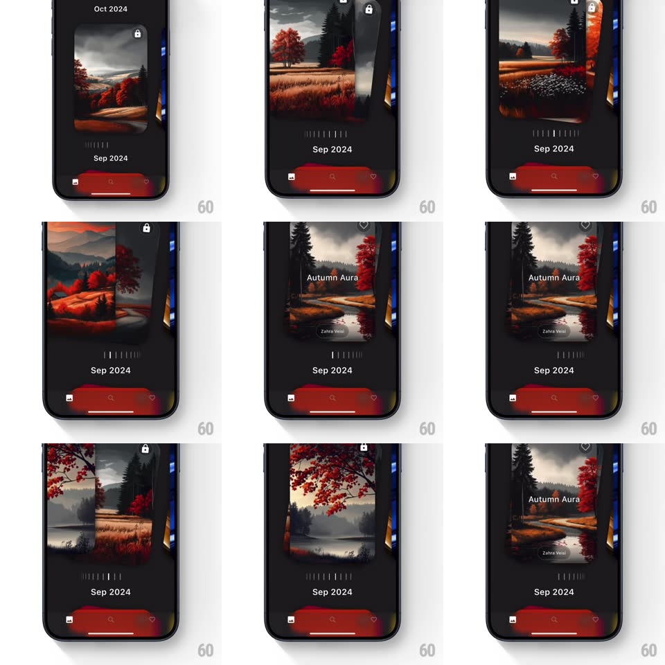

Media
Frame-by-frame

Rebuild this interaction 1:1: WallpaperZ's 3D circular slider - wallpaper cards ride a horizontal 3D carousel (center card faces you, neighbors rotate away in perspective), scrubbed by a tick-mark dial, snapping to each card with a spring.

Rebuild this interaction 1:1: WallpaperZ's 3D circular slider - wallpaper cards ride a horizontal 3D carousel (center card faces you, neighbors rotate away in perspective), scrubbed by a tick-mark dial, snapping to each card with a spring.
## Integration
Integration: stack-agnostic spec - springs given as stiffness/damping, timed motions as duration + curve; map every value to your framework and animation library of choice.
## Scene
A dark browsing screen: month label above ("Oct 2024" / "Sep 2024"), the carousel center-stage (center wallpaper card upright with a lock icon top-right; flanking cards rotated ~45deg and receding in perspective, edges curving away), a row of vertical dial ticks under the carousel with a position marker, and a red bottom bar (home, search, heart). The focused card shows its title ("Autumn Aura") and author ("Zahra Vosi").
## Motion spec
Pattern: coverflow carousel + dial scrubber.
- Drag horizontally (on the cards or the dial): the carousel rotates 1:1 - cards swing around the cylinder, the center card rotating away as the neighbor rotates in; side cards dim and shrink slightly with depth.
- The tick dial scrolls in sync, ticks passing the center marker (a slightly longer highlighted tick).
- Release: the carousel snaps to the nearest card (spring ~380/22, 300ms) with haptic-style tick feedback as positions pass.
- On settle: the month label crossfades if the period changed, and the focused card's title/author fade up over its bottom (200ms).
- Fling carries momentum across multiple cards before snapping.
## Calibration
- Rotation angle per card ~45deg with strong perspective (~900px) - side cards must read as curved away, not flat.
- The dial and carousel are the same value - never desync them.
## Reduced motion
Cards crossfade between positions; dial steps without scrolling.
## Don't miss
- The lock icon on locked wallpapers rides the card through the rotation.
- Edge cards clip at the screen bounds - the cylinder implies more content offscreen.